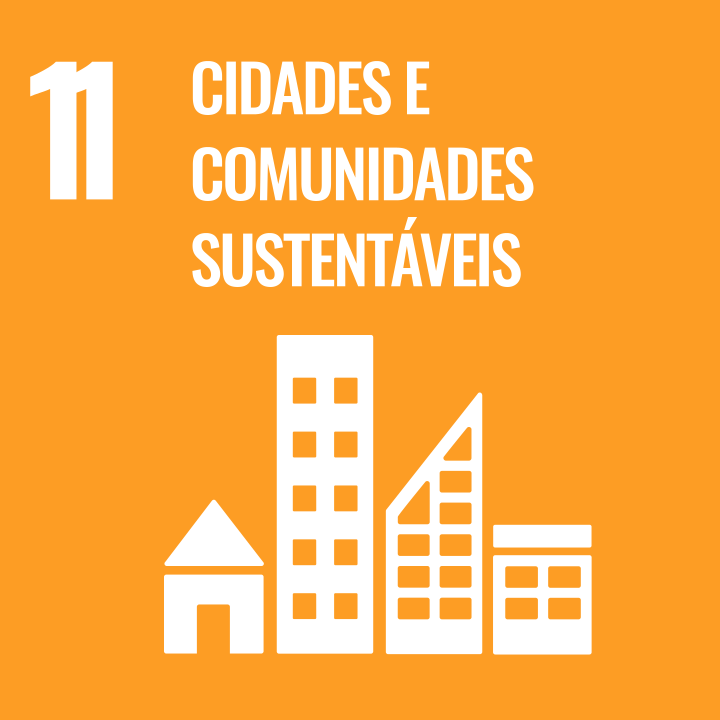
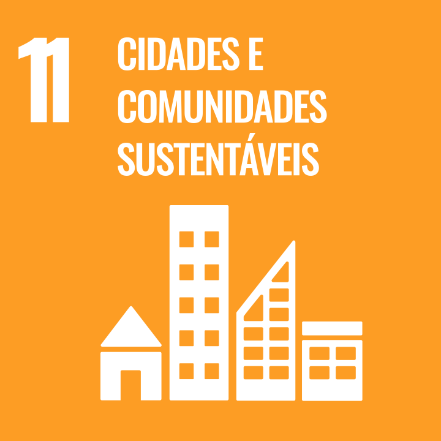

Éden – seu app de hortas!
@eden.tcc
Introdução
O “Éden” é um aplicativo mobile que incentiva e guia a criação de hortas caseiras, com o foco de facilitar o cultivo por iniciantes, fornecendo orientações e promovendo práticas sustentáveis no cotidiano. A proposta central é desenvolver uma atividade prazerosa, prática e beneficente para a saúde e bem estar, mesmo para aqueles que não têm nenhuma experiência ou espaço em casa. Além disso, o projeto visa integrar de forma prática e educativa o conceito de sustentabilidade, hortoterapia e agroflorestamento, mostrando atividades e materiais informativos sobre as temáticas.

 


Objetivos
O aplicativo visa aperfeiçoar um estilo de vida consciente, autônomo e saudável. Ao incentivar o plantio doméstico, fomentar o bem-estar físico e mental e a sensibilização ambiental, o sistema propõe não apenas transformar o ambiente da casa, mas também a conexão do usuário com o lugar em que vive. A longo prazo, espera-se que a comunidade toda seja envolvida e transformada em uma sociedade formada por cidadãos mais conscientes e responsáveis.
O Éden é baseado nos seguintes Objetivos de Desenvolvimento Sustentável (ODS) da ONU: ODS 2, que objetiva garantir segurança alimentar e produção consciente; ODS 3, destinada a promover saúde e bem-estar de acesso; ODS 11, foca-se em um futuro sustentável em cidades que ofereçam acessibilidade e segurança; e ODS 12, visa assegurar o desenvolvimento humano de forma responsável, respeitando outros aspectos do meio.
Diferencial do Éden
Alimentação Saudável
Com tantos processos agrícolas que podem causar problemas ambientais e de saúde a longo prazo, a alimentação orgânica se torna um debate cada vez mais importante. O acesso a esses alimentos por parte da população é desigual – são mais caros que as hortaliças que passam pelos processos agrícolas citados anteriormente. Dessa forma, uma alternativa saudável e orgânica é a horta caseira. O hábito do cultivo doméstico auxilia alimentação nutritiva, aumentando o consumo de fibras, na diminuição dos gastos com alimentos, e também do cuidado com o seu corpo e principalmente, diminuindo o nível de cortisol (hormônio responsável pelo estresse) e auxiliando na prevenção do Alzheimer e outras doenças neurodegenerativas.
Hortoterapia
A prática de hortoterapia mostra-se muito relevante, uma vez que são comprovados os benefícios de utilização de ervas medicinais, não somente por conta das características de cura da planta, mas também o processo de cultivo, o contato com a terra e as plantas serve como uma atividade terapêutico. Desta forma, as comunidades e indivíduos poderão se tornar mais sustentáveis e responsáveis, visando pelo seu bem-estar mental e mantendo sempre a colaboração de saberes tradicionais e científicos de modo a influenciar o surgimento de novos conhecimentos, e contribuir para disseminação e entendimento de culturas.
Sustentabilidade
Sustentabilidade é um conceito abrangente, que relaciona diferentes fatores, social, ambiental, institucional e econômico, em prol de uma causa em comum, suprir as próprias necessidades sem afetar o meio ambiente ou futuras gerações. A agricultura orgânica é uma prática agroecológica e alternativa viável para a produção agrícola sustentável. Esta prática não apenas promove uma alimentação saudável, mas também contribui para a recuperação de recursos naturais e a maior qualidade de vida humana.